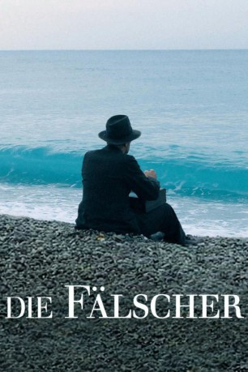
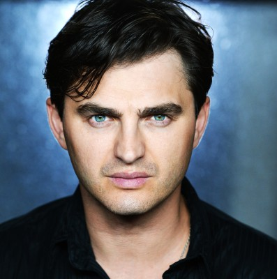
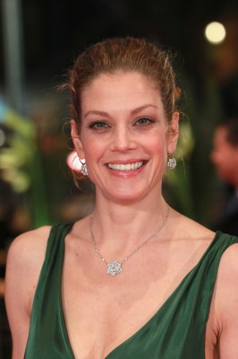
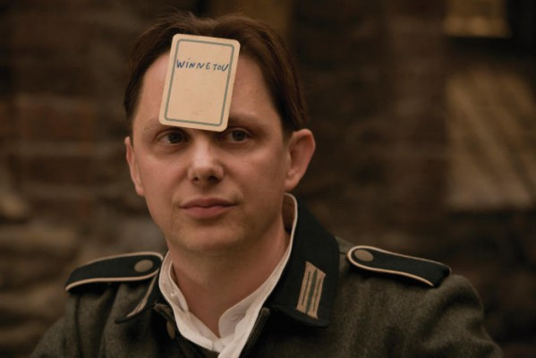
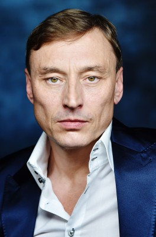

#456 Die Fälscher
Alternativ: Counterfeiters, The (Originaltitel)
Auszeichnungen: 1 Oscars gewonnen
 
 IMDB-Wertung: 7.6 / 10
IMDB-Wertung: 7.6 / 10  Metascore: 78
Metascore: 78 
Während des Zweiten Weltkrieges beschloss die Führung des deutschen Reiches, Banknoten der wichtigsten Kriegsgegner zu fälschen, um so deren Wirtschaft zu schwächen. Im KZ Sachsenhausen wurde unter dem Decknamen "Unternehmen Bernhard" eine Fälscher-Einheit installiert, die von dem renommierten Fälscher Salomon Sorowitsch geleitet wurde. Die an dem Projekt teilnehmenden Häftlinge genossen dabei ungeahnte Privilegien, mussten ihr Tun aber mit ihrem Gewissen vereinbaren können.
Jahr: 2007
Dauer: 98 Minuten
FSK: 12
Land: Österreich Studio: UFATonspuren:
Untertitel:
Auflösung: 1080p (1920x1040) Größe: 8130 MB
Genre: Krimi, Drama, Krieg
Regisseur: Stefan Ruzowitzky
Drehbuch: Adolf Burger, Stefan Ruzowitzky
Soundtrack: Marius Ruhland
Darsteller:
 Karl Markovics als Sorowitsch
Karl Markovics als Sorowitsch August Diehl als Burger
August Diehl als Burger Devid Striesow als Sturmbannführer Herzog
Devid Striesow als Sturmbannführer Herzog Sebastian Urzendowsky als Kolya
Sebastian Urzendowsky als Kolya-  Lenn Kudrjawizki als Loszek
- Dolores Chaplin als Mädchen im Casino
-  Marie Bäumer als Aglaia
-  Arndt Schwering-Sohnrey als Hans
 Jan Pohl als Sascha
Jan Pohl als Sascha-  Werner Daehn als Rosenthal
 Martin Brambach als Hauptscharführer Holst
Martin Brambach als Hauptscharführer Holst August Zirner als Dr. Klinger
August Zirner als Dr. Klinger- Veit Stübner als Atze
- Andreas Schmidt als Zilinski
- Tilo Prückner als Hahn
- Marian Kalus als Plappler
- Norman Stoffregen als Abramovic
- Bernd Raucamp als KZ-Insasse Dusche
- Gode Benedix als 1. KZ-Insasse
- Oliver Kanter als 2. KZ-Insasse
- Hans Peter Kortenbruck als 3. KZ Insasse
- Dirk Prinz als SS-Wache
- Hille Beseler als Grete Herzog
- Erik Jan Rippmann als Bankdirektor
- Tim Breyvogel als Agent
- Roland Fischer-Briand als Concierge
- Louie Austen als Pokerspieler
- Michael Racinais als Direktor
- Michael Blohn als Croupier
- Lilly Kugler als Dame
- Matthias Lühn als Ganove
- Heinz Schubert als Hehler
- Roswitha Straka als Tänzerin
- Holger Schober als Unterscharführer
- Steve Thiede als Kapo
- Peter Strauß als SS-Offizier
- Bernhard Linke als Junger Insasse
- Leander Modersohn als SS-Soldat Zug
- Andreas Haslinger als Häftling , uncredited
- Dieter Hilpmann als Geisel Stein , uncredited
Datei: X:\2007(A-F)\Fälscher, Die (2007, FSK12, 1920x1040).mkv seit 25.02.2015
Festplatte: HD 2007(A-Z)-2008(A-F)
 Es gibt insgesamt 65 Filme in der Gruppe '2007(A-F)'
Es gibt insgesamt 65 Filme in der Gruppe '2007(A-F)'